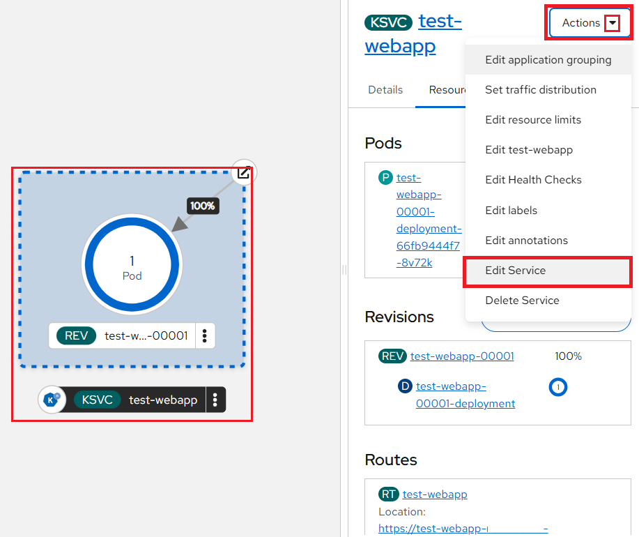

Knative Serving User Guide: Deploying and Managing Serverless Workloads
Here, we walk through the process of deploying a Knative Serving service, see its use of Configuration and Revision, and practice a blue-green deployment and canary release.
In this tutorial, you will:
-
Deploy an OpenShift Serverless
serviceutilizing the knative client (kn) or the OpenShift client (oc) CLI. -
Deploy multiple
revisionsof a service. -
Understand the
underlying componentsof a serverless service. -
Understand how Serverless is able to
scale-to-zero. -
Run different revisions of a service via
blue-greendeployments andcanaryrelease.
Prerequisites
-
Setup the OpenShift CLI (
oc) Tools locally and configure the OpenShift CLI to enableoccommands. Refer to this user guide. -
The next step is to install the Knative CLI (
kn) on the bootstrap machine used to access the NERC's OpenShift Container Platform (OCP) cluster. The Knative clientknallows you to create Knative resources from the command line or from within Shell scripts. Follow the official documentation to download and install the Knative CLI.You can verify the Knative CLI installation by running the following command:
kn versionFor more information regarding the CLI commands available for Knative Functions, Serving, and Eventing.
Using Knative Serving
Knative Serving is ideal for running application services inside Kubernetes, offering simplified deployment syntax with automated scale-to-zero and scale-out based on HTTP load. The Knative platform manages your service's deployments, revisions, networking, and scaling. Since Knative Serving can automatically scale down to zero when not in use.
Knative Serving is a platform for streamlined application deployment, traffic-based auto-scaling from zero to N, and traffic-split rollouts.
Other key features include:
-
Simplified deployment of serverless containers
-
Traffic-based auto-scaling, including scale-to-zero
-
Routing and network programming
-
Point-in-time application snapshots and their configuration
Creating serverless applications
You can create a serverless application by using one of the following methods:
-
Create a Knative Service from the OCP Web Console by navigating to the Serverless -> Serving menu.
-
Create a Knative Service by using the Knative (
kn) CLI. -
Create and apply a Knative Service object as a YAML file, by using the
ocCLI.
Deploying a Test InferenceService in Your Namespace for Istio Sidecar Validation
Create a "dummy" InferenceService for your namespace that needs just basic/standalone
knative serving features:
apiVersion: serving.kserve.io/v1beta1
kind: InferenceService
metadata:
annotations:
security.opendatahub.io/enable-auth: 'true' # (1)!
serving.knative.openshift.io/enablePassthrough: 'true' # (2)!
serving.kserve.io/deploymentMode: Serverless # (3)!
sidecar.istio.io/inject: 'true' # (4)!
sidecar.istio.io/rewriteAppHTTPProbers: 'true' # (5)!
serving.kserve.io/stop: 'true' # (6)!
labels:
opendatahub.io/dashboard: 'false'
name: dummy-inference-service-for-knative-serving
spec:
predictor:
model:
modelFormat:
name: dummy # (7)!
name: ""
-
Ensures security/auth is enabled, typically via OpenShift/ODH integration.
-
Crucial for TLS/HTTPS passthrough, often required when Istio is involved.
-
Enforces the use of Knative Serving for scale-to-zero and autoscaling.
-
Injects the Istio proxy sidecar into the resulting pod.
-
Ensures health probes work correctly with the sidecar.
-
A KServe instruction to pause or scale the service down immediately.
-
Placeholder format, indicating this is likely a test/infrastructure resource.
Why Set Up a 'Dummy' InferenceService?
Deploy the provided YAML to create a dummy KServe InferenceService used to validate Knative Serving and Istio Service Mesh integration in an OpenShift Data Hub (ODH) environment. Without this, the Knative Service cannot create an external route.
The issue you encountered (Waiting for load balancer to be ready) occurs when the namespace is not part of the Service Mesh. In this case, Istio cannot create the external routing rules required to expose the service.
This dummy InferenceService uses a non-functional placeholder model but is
configured to exercise Knative serverless behavior and Istio sidecar-based routing.
The "dummy" InferenceService can be deployed using the following oc command:
oc apply -f <filename>
Deploy Knative Service in Your Namespace
Procedure:
1. Deploy Knative Services:
After successfully deploying the dummy InferenceService in your project namespace,
create a Knative Service with Istio sidecar injection enabled and configure it
to use an OpenShift pass-through route using the following example:
apiVersion: serving.knative.dev/v1
kind: Service
metadata:
name: <service_name> # (1)!
namespace: <your-namespace> # (2)!
annotations:
serving.knative.openshift.io/enablePassthrough: 'true' # (3)!
spec:
template:
spec:
containers:
- image: <image_url>
-
Choose an appropriate name for the Service.
-
Your project's namespace where you want to run the serverless application. If this line is omitted, the namespace currently selected in the OpenShift Web Console will be used as the default.
-
MANDATORY: Instructs Knative Serving to generate an OpenShift Pass-through enabled route.
Very Important: Always Enable the OpenShift Pass-through Route
Please note that you must add the following annotation to the Service. This annotation is required to ensure proper routing and to prevent external access issues when using Knative with OpenShift and Istio. Only then will your Knative Service work correctly with the Service Mesh.
...
spec:
template:
metadata:
...
annotations:
serving.knative.openshift.io/enablePassthrough: 'true'
...
...
For example, we are going to deploy a Knative Serving service, see its use of Configuration and Revision.
kn service create test-webapp \
--annotation-service serving.knative.openshift.io/enablePassthrough=true \
--env RESPONSE="Hello Serverless!" \
--image docker.io/openshift/hello-openshift
apiVersion: serving.knative.dev/v1
kind: Service
metadata:
name: test-webapp
annotations:
serving.knative.openshift.io/enablePassthrough: 'true'
spec:
template:
spec:
containers:
- image: docker.io/openshift/hello-openshift
env:
- name: RESPONSE
value: "Hello Serverless!"
The OpenShift Web Console will display the Knative Service (KSVC) as shown below:
{kind=link}
2. Deploy a curl pod to test the connections:
Run the following script on your local terminal:
cat <<EOF | oc apply -f -
apiVersion: apps/v1
kind: Deployment
metadata:
name: curl
labels:
app: curl
spec:
replicas: 1
selector:
matchLabels:
app: curl
template:
metadata:
labels:
app: curl
annotations:
sidecar.istio.io/inject: 'true'
spec:
containers:
- name: curl
image: curlimages/curl
command:
- sleep
- "3600"
EOF
3. Verification:
Applying the application service configuration from the previous step creates a route, service, revision, and other resources managed by Knative Serving. You can verify these components using the following command:
Service:
kn service list
Output:
NAME URL LATEST AGE CONDITIONS READY REASON
test-webapp https://test-webapp-<your-namespace>.apps.shift.nerc.mghpcc.org test-webapp-00001 3m16s 3 OK / 3 True
Revisions:
kn revision list
Output:
NAME SERVICE TRAFFIC TAGS GENERATION AGE CONDITIONS READY REASON
test-webapp-00001 test-webapp 100% 1 3m17s 4 OK / 4 True
Service:
oc get serving
Output:
NAME URL READY REASON
route.serving.knative.dev/test-webapp https://test-webapp-<your-namespace>.apps.shift.nerc.mghpcc.org True
NAME LATESTCREATED LATESTREADY READY REASON
configuration.serving.knative.dev/test-webapp test-webapp-00001 test-webapp-00001 True
NAME CONFIG NAME GENERATION READY REASON ACTUAL REPLICAS DESIRED REPLICAS
revision.serving.knative.dev/test-webapp-00001 test-webapp 1 True 0 0
NAME URL LATESTCREATED LATESTREADY READY REASON
service.serving.knative.dev/test-webapp https://test-webapp-<your-namespace>.apps.shift.nerc.mghpcc.org test-webapp-00001 test-webapp-00001 True
Revisions:
oc get rev \
--selector=serving.knative.dev/service=test-webapp \
--sort-by="{.metadata.creationTimestamp}"
4. Invoke Service:
EXTERNAL_URL=$(oc get ksvc test-webapp -o custom-columns=:.status.url --no-headers)
oc exec deployment/curl -it -- curl -ik $EXTERNAL_URL
Output:
HTTP/2 200
content-length: 17
content-type: text/plain; charset=utf-8
date: Sat, 13 Dec 2025 21:31:58 GMT
server: istio-envoy
x-envoy-upstream-service-time: 5627
Hello Serverless!
Controlling Knative Service Visibility (Internal vs External Access)
Use the following commands to control service visibility:
kn service update test-webapp --cluster-local # Make the service internal
kn service update test-webapp --no-cluster-local # Expose the service externally
The --cluster-local flag makes the Knative Service accessible only within
the cluster, preventing external access. The --no-cluster-local flag exposes
the service externally, allowing it to be accessed through an external route.
5. Cleanup:
Delete the resources that were created after testing successful:
kn service delete test-webapp
oc delete deployment/curl
oc delete ksvc/test-webapp
Creating a service using offline mode
In offline mode, create a local Knative service descriptor file:
kn service create test-webapp-offline \
--annotation-service serving.knative.openshift.io/enablePassthrough=true \
--env RESPONSE="Hello Serverless!" \
--image docker.io/openshift/hello-openshift \
--target ./ \
--namespace test
-
The
--target ./flag offline mode and specifies./as the directory for storing the new directory tree. -
The
--namespace testoption places the new service in the 'test' namespace. You can change it to the name of your desired namespace. If you do not use--namespace, and you are logged in to the OCP cluster, the descriptor file is created in the current namespace. Based on the namespace name a new directory will be created.
Output:
Service 'test-webapp-offline' created in namespace 'test'.
Examine the created directory structure:
tree ./
Output:
./
└── test
└── ksvc
└── test-webapp-offline.yaml
2 directories, 1 file
-
The current
./directory specified with--targetcontains the newtest/directory that is named after the specified namespace. -
The
test/directory contains theksvcdirectory, named after the resource type. -
The
ksvcdirectory contains the descriptor filetest-webapp-offline.yaml, named according to the specified service name i.e.test-webapp-offline.
Use the service descriptor file to create the service on the cluster:
kn service create -f test/ksvc/test-webapp-offline.yaml
AutoScaling
You can review the autoscaler configuration by running the following command:
oc get configmap config-autoscaler -n knative-serving -o yaml
Scale bounds
In the service definition above, note that no annotations are applied in the resource spec. By default, OpenShift Serverless will scale these deployments down to zero running pods and automatically scale them up as load increases. Resource limits can be set through the Kubernetes resource definition.
In the Service resource definition, you do not need to define any compute infrastructure or configure scaling behavior. You only specify the optional minimum and maximum scale. The minimum scale can be set to zero, meaning no pods run until a request arrives, at which point a pod is automatically created with minimal startup delay. This enables compute resources to be used strictly on an as-needed basis.
For example, to specify a minimum of 1 pod and a maximum of 3 pods, add the following syntax:
kn service create <service_name> --image <image_uri> --scale-min 1 --scale-max 3
...
spec:
template:
metadata:
...
annotations:
autoscaling.Knative.dev/min-scale: "1"
autoscaling.knative.dev/max-scale: "3"
...
...
When testing, add the annotations to set min-scale to 1, so the pod never
shuts down. This lets you more easily access logs or open a terminal to examine
the state of your function container.
kn service create test-webapp \
--annotation-service serving.knative.openshift.io/enablePassthrough=true \
--env RESPONSE="Hello Serverless!" \
--image docker.io/openshift/hello-openshift \
--scale-min 1 \
--scale-max 3
apiVersion: serving.knative.dev/v1
kind: Service
metadata:
name: test-webapp
annotations:
serving.knative.openshift.io/enablePassthrough: 'true'
spec:
template:
metadata:
annotations:
autoscaling.Knative.dev/min-scale: "1"
autoscaling.knative.dev/max-scale: "3"
spec:
containers:
- image: docker.io/openshift/hello-openshift
env:
- name: RESPONSE
value: "Hello Serverless!"
Concurrency
Concurrency defines how many simultaneous requests each application replica can handle at a given time. It can be configured as either a soft limit or a hard limit:
-
Soft limit: A target number of concurrent requests that is not strictly enforced. During traffic spikes, this limit may be exceeded.
You can set a soft concurrency target for your Knative Service by adding the
autoscaling.knative.dev/targetannotation to the spec, or by using thekn servicecommand with the appropriate flags, as shown below where the concurrency target is set to 50 requests.kn service create <service_name> --image <image_uri> --concurrency-target 50... spec: template: metadata: ... annotations: autoscaling.knative.dev/target: "50" ... ... -
Hard limit: A strictly enforced maximum number of concurrent requests. Once the limit is reached, additional requests are queued until capacity becomes available.
You can specify a hard concurrency limit for your Knative service by modifying the
containerConcurrencyspec, or by using thekn servicecommand with the correct flags, as shown below where the concurrency limit is set to 50 requests.kn service create <service_name> --image <image_uri> --concurrency-limit 50... spec: template: ... spec: containerConcurrency: 50 ... ...
Traffic splitting
In a Knative application, traffic can be managed using traffic splits. Traffic splits are configured as part of a route, which is managed by a Knative Service.
{kind=link}
Configuring a route allows requests to be distributed across different revisions of a service, as defined by the traffic specification in the Knative Service object.
A traffic specification includes one or more revisions, each receiving a defined percentage of traffic. The total traffic allocation must equal 100%, which is validated by Knative. Revisions can reference a specific, named revision or the latest revision, which automatically updates when new revisions are created. Each revision can also be assigned a tag to generate an additional access URL.
The traffic specification can be modified by:
-
Editing the Service YAML directly
-
Using the Knative (
kn) CLI with the--trafficflag -
Using the OpenShift web console
Traffic splitting editing the Service YAML directly
When you create a Knative Service, it does not have any default traffic specification settings.
Traffic spec examples:
The following example shows a traffic specification where 100% of traffic is routed
to the latest revision of the service. Under the status section, you can see
the name of the revision that latestRevision points to:
apiVersion: serving.knative.dev/v1
kind: Service
metadata:
name: example-service
namespace: <your-namespace>
spec:
...
traffic:
- latestRevision: true
percent: 100
status:
...
traffic:
- percent: 100
revisionName: example-service
The following example shows a traffic specification where 100% of traffic is
routed to the revision tagged as current, with the revision name specified as
example-service. The revision tagged as latest remains available, even though
no traffic is directed to it:
apiVersion: serving.knative.dev/v1
kind: Service
metadata:
name: example-service
namespace: <your-namespace>
spec:
...
traffic:
- tag: current
revisionName: example-service
percent: 100
- tag: latest
latestRevision: true
percent: 0
The following example demonstrates how the traffic specification can be extended
to split traffic between multiple revisions. In this case, 50% of traffic is
routed to the revision tagged as current and 50% to the revision tagged as
candidate. The revision tagged as latest remains available, even though it
receives no traffic:
apiVersion: serving.knative.dev/v1
kind: Service
metadata:
name: example-service
namespace: <your-namespace>
spec:
...
traffic:
- tag: current
revisionName: example-service-1
percent: 50
- tag: candidate
revisionName: example-service-2
percent: 50
- tag: latest
latestRevision: true
percent: 0
Traffic splitting using the Knative CLI
Procedure:
Specify the revision of your service and what percentage of traffic you want to
route to it by using the --traffic tag with a standard kn service update command:
Example command:
kn service update <service_name> --traffic <revision>=<percentage>
Where:
-
<service_name>is the name of the Knative Service for which you are configuring traffic routing. -
<revision>is the revision that will receive a portion of the traffic. This can be the revision name or a tag assigned using the--tagflag. -
<percentage>is the percentage of traffic routed to the specified revision.
Optional: The --traffic flag can be specified multiple times in a single
command. For example, if you have a revision tagged as @latest and another
revision named stable, you can define the traffic split between them as follows:
kn service update test-webapp --traffic @latest=20,stable=80
Splitting Traffic between Revisions
Procedure:
1. Create and deploy an app as a Knative service:
kn service create test-webapp \
--annotation-service serving.knative.openshift.io/enablePassthrough=true \
--env RESPONSE="Hello Serverless!" \
--image docker.io/openshift/hello-openshift
kn revision list
Output:
NAME SERVICE TRAFFIC TAGS GENERATION AGE CONDITIONS READY REASON
test-webapp-00001 test-webapp 100% 1 8s 4 OK / 4 True
2. Create a new Revision:
kn service update test-webapp --scale-max 10 --annotation autoscaling.knative.dev/metric=rps --scale-target 1 --scale-window=10s
kn revision list
Output:
NAME SERVICE TRAFFIC TAGS GENERATION AGE CONDITIONS READY REASON
test-webapp-00002 test-webapp 100% 2 27s 3 OK / 4 True
test-webapp-00001 test-webapp 1 2m5s 3 OK / 4 True
3. Set 100% traffic distribution to the second revision:
kn service update test-webapp --traffic test-webapp-00002=100
4. Create a new Third Revision:
kn service update test-webapp --env RESPONSE="Hello NERC Serverless!" --revision-name=nerc-revision
kn revision list
Output:
NAME SERVICE TRAFFIC TAGS GENERATION AGE CONDITIONS READY REASON
test-webapp-nerc-revision test-webapp 3 44s 3 OK / 4 True
test-webapp-00002 test-webapp 100% 2 2m21s 3 OK / 4 True
test-webapp-00001 test-webapp 1 3m59s 3 OK / 4 True
5. Tag the Third Revision:
kn service update test-webapp --tag @latest=nerc
kn revision list
Output:
NAME SERVICE TRAFFIC TAGS GENERATION AGE CONDITIONS READY REASON
test-webapp-nerc-revision test-webapp nerc 3 108s 3 OK / 4 True
test-webapp-00002 test-webapp 100% 2 3m25s 3 OK / 4 True
test-webapp-00001 test-webapp 1 5m3s 3 OK / 4 True
6. Split Traffic Between the Second (80%) and the Third Tagged Revision (20%):
kn service update test-webapp --traffic nerc=20,test-webapp-00002=80
kn revision list
Output:
NAME SERVICE TRAFFIC TAGS GENERATION AGE CONDITIONS READY REASON
test-webapp-nerc-revision test-webapp 20% nerc 3 3m25s 3 OK / 4 True
test-webapp-00002 test-webapp 80% 2 5m2s 3 OK / 4 True
test-webapp-00001 test-webapp 1 6m40s 3 OK / 4 True
Managing Traffic between revisions by using the OpenShift web console
To split traffic between multiple revisions of an application in the Topology view:
-
Navigate to the Serverless -> Serving menu. Click the Knative service to see its overview in the side panel.
-
Click the Resources tab, to see a list of Revisions and Routes for the service.
-
Go to "Actions" -> "Edit Service":

Then modify the service configuration in the YAML editor, and click Save. For example, change the
timeoutsecondsfrom300to301.This change in the configuration triggers a new revision.
In the Topology view, the latest revision is displayed and the Resources tab for the service now displays the two revisions as shown below:
-
Either, go to "Actions" -> "Set traffic distribution" Or, in the Resources tab, click Set Traffic Distribution button to see the traffic distribution dialog box:
Add the split traffic percentage portion for the two revisions in the Splits field.
Add tags to create custom URLs for the two revisions (Optional)
Click Save to see two nodes representing the two revisions in the Topology view.
{kind=link}
{kind=link}
{kind=link}
{kind=link}
{kind=link}
{kind=link}
Rerouting Traffic Using Blue/green and canary deployments
Blue–green deployment is a release strategy that maintains two identical environments: one active (blue) and one idle (green) - allowing traffic to be switched for seamless updates with minimal downtime and easy rollback.
Developers can then specify exactly what percentage of incoming network traffic should be routed to the new "canary" version versus the existing "stable" version. This granular control is essential for validating a new release with a small subset of real user traffic before a full rollout.
Procedure:
-
Create and deploy an app as a Knative service:
kn service create test-webapp \ --annotation-service serving.knative.openshift.io/enablePassthrough=true \ --env RESPONSE="Hello Serverless!" \ --image docker.io/openshift/hello-openshift -
Find the name of the first revision created when you deployed the service by running the following command:
oc get ksvc test-webapp -o=jsonpath='{.status.latestCreatedRevisionName}'Output:
test-webapp-00001 -
Add the following YAML to the service spec to send inbound traffic to the revision:
... spec: traffic: - revisionName: <first_revision_name> percent: 100 # All traffic goes to this revision ... -
Verify that you can view your app at the URL output you get from running the following command:
oc get ksvc test-webapp -
Deploy a second revision of your application by changing at least one field in the service's template spec and redeploying it. For example, you can update the service image or an environment variable. Redeploy the service by applying the updated YAML file or using the
kn service updatecommand:kn service update test-webapp --env RESPONSE="Hello NERC Serverless!" --revision-name=nerc-revision -
Find the name of the second, latest revision that was created when you redeployed the service, by running the command:
oc get ksvc test-webapp -o=jsonpath='{.status.latestCreatedRevisionName}'Output:
test-webapp-nerc-revisionAt this point, both the first and second revisions of the service are deployed and running.
-
Update your existing service to create a new test endpoint for the second revision, while directing all other traffic to the first revision.
Example of updated service spec with test endpoint:
... spec: traffic: - revisionName: <first_revision_name> percent: 100 # All traffic is still routed to the first revision - revisionName: <second_revision_name> percent: 0 # No traffic is routed to the second revision tag: v2 # Named route for testing ...After redeploying the service by reapplying the YAML, the second revision is staged. No traffic is routed to this revision at the main URL, and Knative creates a new service named
v2for testing the newly deployed revision. -
Get the URL of the new service for the second revision, by running the following command:
oc get ksvc test-webapp --output jsonpath="{.status.traffic[*].url}"You can use this URL i.e.
https://v2-test-webapp-<your-namespace>.apps.shift.nerc.mghpcc.orgto verify that the new version of the application is functioning correctly before routing any traffic to it. -
Update your existing service to split traffic evenly, sending 50% of traffic to the first revision and 50% to the second revision.
Example of updated service spec splitting traffic 50/50 between revisions:
... spec: traffic: - revisionName: <first_revision_name> percent: 50 - revisionName: <second_revision_name> percent: 50 tag: v2 ... -
When ready to route all traffic to the new version, update the service to send 100% of traffic to the second revision.
Example of updated service spec sending all traffic to the second revision:
... spec: traffic: - revisionName: <first_revision_name> percent: 0 - revisionName: <second_revision_name> percent: 100 tag: v2Important Note
If you do not plan to roll back to the first revision, you can remove it instead of setting its traffic to 0%. Non-routable revisions are automatically garbage-collected.
-
Visit the URL of the first revision to confirm that no traffic is being routed to the old version of the application.
There are many other configurable options to manage the scaling of your workloads, as outlined in the documentation.
For more information, see the documentation on Getting started with OpenShift Serverless using Knative Serving.